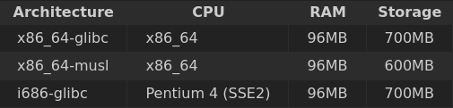

Esta seção inclui informações gerais sobre o processo de instalação do Void. Para guias específicos, consulte a seção "Instalação avançada".
Void pode ser instalado em hardwares fracos, embora recomendemos os seguintes requisitos para a maioria das instalações:
Observe que as instalações de imagem xfce requerem mais recursos.
Void não está disponível para as arquiteturas i386, i486 ou i586.
Antes de instalar o musl Void, leia a seção "musl" deste Manual, para que você esteja ciente das incompatibilidades de software.
É altamente recomendável ter uma conexão de rede disponível durante a instalação para baixar atualizações, mas isso não é obrigatório. As imagens ISO contêm dados de instalação em disco e podem ser instaladas sem conectividade de rede.
As imagens live mais recentes e os tarballs rootfs podem ser baixados em https://repo-default.voidlinux.org/live/current/. Eles também podem ser baixados de outros espelhos. As versões anteriores podem ser encontradas em https://repo-default.voidlinux.org/live/, organizadas por data.
O diretório de cada versão de imagem contém dois arquivos usados para verificar a(s) imagem(ns) baixada(s). Primeiro, há um arquivo sha256sum.txt contendo somas de verificação de imagem para verificar a integridade das imagens baixadas. O segundo é o arquivo sha256sum.sig, usado para verificar a autenticidade das somas de verificação.
É necessário verificar a integridade e autenticidade da imagem. Portanto, é recomendável que você baixe os dois arquivos.
Você pode verificar a integridade de um arquivo baixado usando sha256sum(1) com o arquivo sha256sum.txt baixado acima. O comando a seguir verificará a integridade apenas da(s) imagem(ns) que você baixou:
$ sha256sum -c --ignore-missing sha256sum.txt
void-live-x86_64-musl-20170220.iso: OK
Isso verifica se a imagem não está corrompida.
Antes de usar qualquer imagem, recomendamos que você valide as assinaturas na imagem para garantir que não foram adulteradas.
As imagens atuais são assinadas usando uma chave signify específica para a versão. Se você já estiver no Void, poderá obter as chaves do pacote void-release-keys, que será baixado usando seu relacionamento de confiança XBPS existente com suas assinaturas de espelho e pacote. Você também precisará de uma cópia de signify(1) ou minisign(1); no Void, eles são fornecidos pelos pacotes outils ou minisign, respectivamente.
Para obter signify ao usar uma distribuição Linux ou sistema operacional diferente do Void Linux:
Instale o pacote signify no Arch Linux e nas distribuições baseadas em Arch.
Instale o pacote signify-openbsd em distribuições Debian e baseadas em Debian.
Instale o pacote listado aqui para sua distribuição.
Instale signify-osx com homebrew no macOS.
O executável do minisign geralmente é fornecido por um pacote de mesmo nome, e também pode ser instalado no Windows, mesmo sem WSL ou MinGW.
Se você não estiver usando o Void Linux, também será necessário obter a chave de assinatura apropriada do nosso repositório Git aqui.
Depois de obter a chave, você pode verificar sua imagem com os arquivos sha256sum.sig e sha256sum.txt. Primeiro, você precisa verificar a autenticidade do arquivo sha256sum.txt.
Os exemplos a seguir demonstram a verificação do arquivo sha256sum.txt para as imagens 20210930. Em primeiro lugar, com Signify
$ signify -V -p /etc/signify/void-release-20210930.pub -x sha256sum.sig -m sha256sum.txt
Signature Verified
E em segundo lugar, com minisign:
minisign -V -p /etc/signify/void-release-20210930.pub -x sha256sum.sig -m
sha256sum.txt
Signature and comment signature verified
Trusted comment: timestamp:1634597366 file:sha256sum.txt
Por fim, você precisa verificar se a soma de verificação da sua imagem corresponde à do arquivo sha256sum.txt. Isso pode ser feito com o utilitário sha256(1), novamente do pacote outils, conforme demonstrado abaixo para a imagem 20210930 x86_64:
$ sha256 -C sha256sum.txt void-live-x86_64-20210930.iso
(SHA256) void-live-x86_64-20210930.iso: OK
Alternativamente, se o utilitário sha256 não estiver disponível para você, você pode calcular o hash SHA256 do arquivo, por exemplo usando sha256sum(1), e compare-o com o valor contido em sha256sum.txt:
$ sha256sum void-live-x86_64-20210930.iso
45b75651eb369484e1e63ba803a34e9fe8a13b24695d0bffaf4dfaac44783294 void-live-x86_64-20210930.iso
$ grep void-live-x86_64-20210930.iso sha256sum.txt
SHA256 (void-live-x86_64-20210930.iso) = 45b75651eb369484e1e63ba803a34e9fe8a13b24695d0bffaf4dfaac44783294
Se o processo de verificação não produzir o status "OK" esperado, não o use! Por favor, alerte a equipe do Void Linux de onde você obteve a imagem e como você a verificou, e nós o acompanharemos.